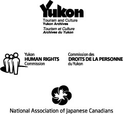

「ユーコンにおけるアジア系移民の歴史」の制作者ユーコン・アーカイブはユーコン準州政府観光文化局文化サービス部門に属する施設です。
このウェブサイトの内容は、ユーコン・アーカイブとユーコン人権審議会によって2007年に共同制作された「知られざる歴史：ユーコンにおけるアジア系移民の歴史」という三枚のパネルに基づいています。
制作/協力
著者
ユーコン・アーカイブ
ペギー・ドーセィ
ユーコン人権審議会
リリアン・ナカムラ・マガイアー
展示内容調査とデザイン
パトリシア・ハラディ・グラフィック・デザイン
ウェブサイト・デザイン/プログラミング
フランス語訳
ユーコン準州政府フランス語サービス部門
日本語訳
鳥飼文彦、妙子 （鳥飼翻訳サービス）
連絡先
Yukon Archives
Box 2703, Whitehorse, Yukon,
Y1A 2C6
電話: 867-667-5321
ファックス:
867-393-6253
無料電話 (ユーコン内のみ):
1-800-661-0408 ext. 5321
ウェブサイト:
yukonarchives.ca
メール・アドレス:
コピーライト
このウェブサイトの展示内容は、調査又は個人の研究のために限り使用できますが、コピーライト所持者の許可無しにそれ以外の目的に使用することは固く禁じられています。
© ユーコン準州政府